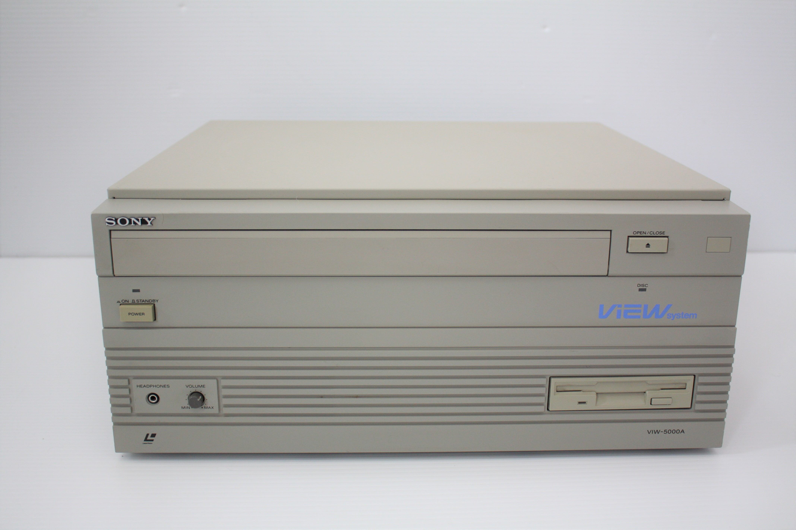
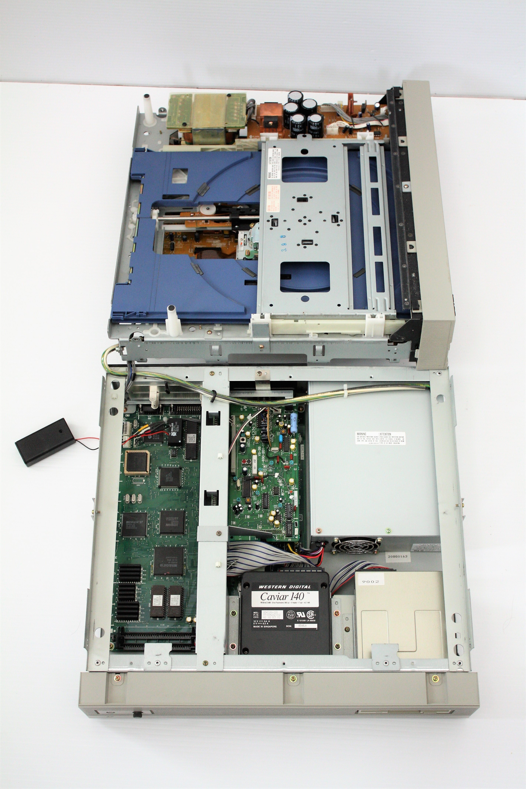
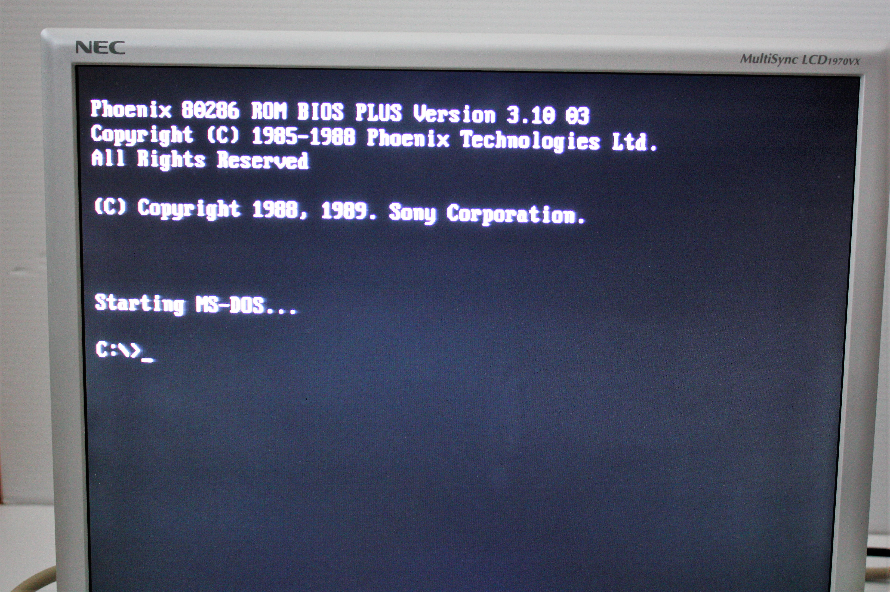
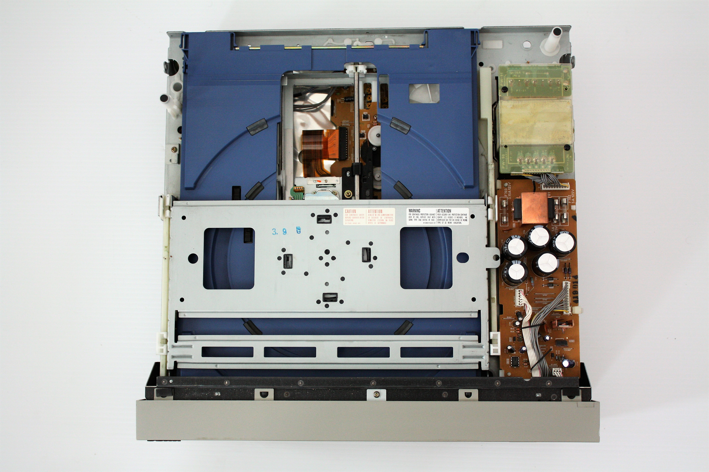
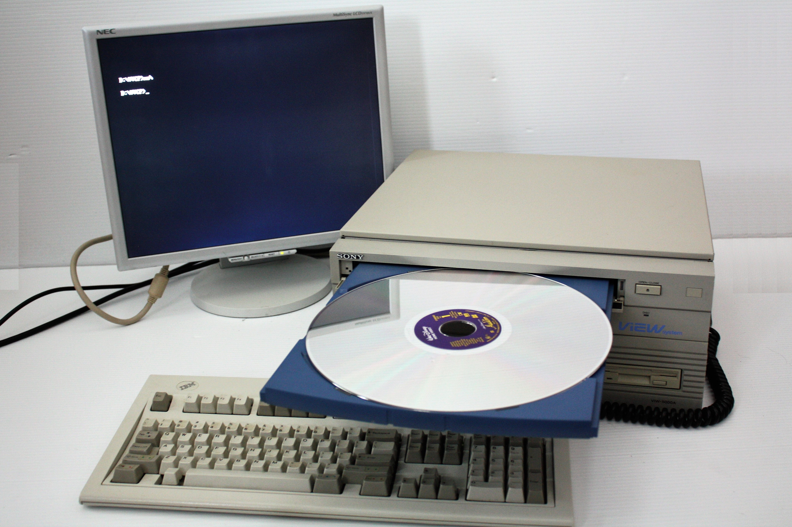

Sony VIEW System
A PC with a laserdisc for a hard drive

Overview
The Sony VIEW System (introduced with the SMC-2000 computer, 1984-85) combined a personal computer and a videodisc player in one chassis to deliver interactive training. Its defining feature was "single-media" delivery: the laserdisc carried not just analog video but also digital data — MS-DOS program files, courseware, and still-frame audio — recorded as black-and-white image patterns within video frames at 4KB per frame, using the same block-correction and interleaving techniques as CD-ROM. A pressed disc could therefore hold 30 minutes of analog motion video, 54,000 individually addressable frames, digital audio for stills, and the executable software that drove the lesson.
VIEW was built for a specific project: the US Army's EIDS (Electronic Information Delivery System), a simulator for equipment-operation training. Sony, US-based Emerson, and Canadian Matrox all submitted proposals and prototypes in response to the RFQ; Matrox won, and Sony never supplied the contract. The requirements pushed the state of the art: the disc itself had to carry the application software the PC runs — "single-media" launch — plus "still-frame audio," digitally recorded sound played under analog still frames.
Because adding a standard digital data mode to the LaserVision spec was impractical, Sony encoded digital data as video: each frame of the CAV disc stored a 4KB pattern of black-and-white cells decoded by an expansion board inside the LDP-2000 player, which also output still-frame audio and transferred data to the PC over IEEE-488. The EIDS configuration omitted the floppy drive entirely — MS-DOS booted from a built-in ROM disk while the training software loaded from the videodisc. The master for an EIDS disc was a 1-inch videotape cut at Sony's Hamamatsu videodisc plant, which produced the stampers and pressed the discs. Later 80286-based models (VIW-5000A/3015A/3020) with touchscreen options sold into education and training markets into the early 1990s.
Deep dive
The disc was simultaneously a movie you could watch and a bootable software medium. Cauzin Softstrip printed data on paper and the Sony Typecorder wrote memory to cassette; the VIEW recorded executable software as black-and-white patterns inside analog video frames — a DVD-like fiction forced through analog video years before DVD existed.
The software-and-disc production process was so complex that the whole project remained experimental — the winning Matrox system did not exactly flood the market either. VIEW is preserved today by a handful of collectors and documented in Japanese retro-computing blogs and the VCFED forums.
The VIEW pairs with the BBC Domesday Project as the two most serious 1980s attempts to make the videodisc a general-purpose computer medium — Domesday from the publishing side, VIEW from the hardware side — and with Pioneer LaserBarcode as the industrial interactive-videodisc family.
Team & pioneers
- Sony Corporation. Designer of the SMC-2000/VIEW computer-videodisc system, the LDP-2000 player with digital-data expansion board, and the EIDS proposal.
- US Army / EIDS program. Sponsor of the Electronic Information Delivery System RFQ that drove the single-media and still-frame-audio requirements.
- VintageComputer.ca (Good Old Bits). Preservation: surviving VIW-5000A hardware photography, EIDS documentation, and disc-format diagrams.
Media




Sources
- VintageComputer.ca — Sony VIEW System: PC with a Laser Disc Player built in
- Good Old Bits — SMC-2000 (3) EIDS / US Army spec (disc-format diagrams)
- VCFED Forums — Sony VIEW System thread (brochure scans and photos)
- ERIC ED350043 — interactive video systems including the VIEW 5000 in nursing education